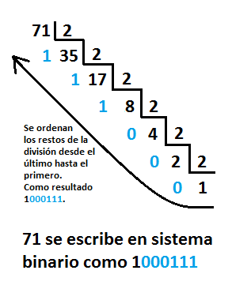
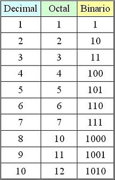

Bases numéricas y códigos
Teorema fundamental de la numeración
Para comprender la idea de base numñerica y códigos, recurrimos al teorema fundamental de la numeración, para expresar un valor en distintas bases:
Dado un número x, su representación en una dada base b consiste en escribirlo como
donde el signo s es igual a 0 o 1 y los coeficientes aj son enteros positivos menores que b. En la vida real la suma tiene sólo un número finito de términos por lo que algunos números son sólo representados de forma aproximada. Usualmente, utilizamos el sistema decimal de numeración (b = 10) pero la representación numérica en sistemas digitales se realiza en general en base 2, denominado sistema de numeración binaria, y ocasionalmente en base 16 (sistema hexadecimal).
Sistema binario (Base 2)
Los ordenadores, por su arquitectura y tecnología internas, trabaja con componentes electrónicos que toman dos estados (Abierto-cerrado, orientación magnética N-S, perforado-no perforado...), por lo que trabaja en base dos (0 , 1). Este sistema solo cuenta con dos caracteres, el 0 y el 1. Esta es la forma interna en la que los ordenadores trabajan, aqunque existan otras bases con las que se trabajen a más altos niveles.
Sistema hexadecimal (Base 16)
Aunque los circuitos electrónicos digitales y las computadoras utilizan el sistema binario, el trabajar con este sistema de numeración resulta laborioso, lo que facilita las equivocaciones cuando se trabaja con números binarios demasiado largos.. El sistema Hexadecimal está en base 16, sus números están representados por los 10 primeros dígitos de la numeración decimal, y el intervalo que va del número 10 al 15 están representados por las letras del alfabeto de la A a la F. Actualmente el sistema hexadecimal es uno de los más utilizados en el procesamiento de datos, debido principalmente a 2 ventajas:
- La primera ventaja es la simplificación en la escritura de los números decimales, cada 4 cifras binarias se representan por una hexadecimal.
- La segunda es que cada cifra hexadecimal se pueden expresar mediante 4 cifras binarias, con lo que se facilita la trasposición entre estos 2 sistemas. Para convertir un número binario en hexadecimal se realiza el mismo proceso, pero a la inversa.
Sistema octal (Base 8)
El sistema numérico en base 8 se llama octal y utiliza los dígitos del 0 al 7. En informática a veces se utiliza la numeración octal en vez de la hexadecimal. Tiene la ventaja de que no requiere utilizar otros símbolos diferentes de los dígitos. Sin embargo, para trabajar con bytes o conjuntos de ellos, asumiendo que un byte es una palabra de 8 bits, suele ser más cómodo el sistema hexadecimal, por cuanto todo byte así definido es completamente representable por dos dígitos hexadecimales.
